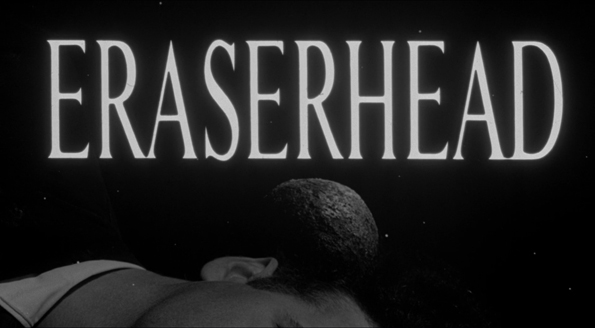

Trailer
Considerado um dos melhores longas-metragens independentes de todos os tempos, esta estreia de David Lynch é uma obra de sagacidade imagética e ouvido absoluto.
 VER AGORA
VER AGORA

Criado por David Lynch, o filme "Eraserhead" (USA, 1977) acompanha Henry, um homem solitário que vive em uma cidade industrial e descobre que sua antiga namorada, Mary, deu à luz uma estranha criatura. Após se casar com ela, passa a enfrentar a responsabilidade de cuidar do bebê, enquanto sua realidade cotidiana se mescla cada vez mais com pesadelos, situações absurdas e imagens grotescas.
Com uma atmosfera claustrofóbica, fotografia em preto e branco e intenso desenho sonoro, Lynch constrói uma experiência que aborda temas como paternidade, medo, isolamento, sexualidade e ansiedade. Mais do que contar uma história convencional, esta obra explora o surrealismo a fim de representar os conflitos e as angústias internas de seu protagonista.
Considerado um dos melhores longas-metragens independentes de todos os tempos, esta estreia de David Lynch é uma obra de sagacidade imagética e ouvido absoluto.
VER AGORA